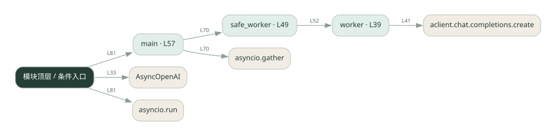

2-10 · 全课程第 30 节
多 Agent 综合流程
multi_agent_project.py
源码快照 cba9c5541e97 · 静态解析 · 2026-09-10
01 / 要完成的事
组合并发 worker、失败处理和结果汇总。
02 / 为什么要做
分工只有在失败、等待和汇总都被处理后才能形成完整流程。
03 / 当前代码状态
存在外部服务或模型依赖；执行前需按源文件配置依赖和凭据，可能联网或产生 API 费用。 本次只做静态解析，没有运行练习，也没有替你填写或修改原代码。
04 / 调用图
打开大图 ↗实线：源码中的直接调用；虚线：函数引用/注册、动态调用或按方法名推断的候选。L 是调用所在源码行号。箭头不表示执行顺序或每次必经；分支、循环、异步调度及框架内部调用需结合源码。灰色是外部/未解析目标，橙色是动态分发；省略 print、len 和常规容器操作以减少干扰。孤立函数可能尚未接入。

先从 main 及模块入口 出发，沿箭头找到本文件函数，再查看外部调用或动态分发。右侧调用清单保留所有静态调用点，能回到原文件逐行对照。
05 / 函数定位
| 函数 / 定义行 | 职责（源码注释） | 内部调用 |
|---|---|---|
workerL39 | worker：执行单个子任务（调 LLM） | aclient.chat.completions.create, resp.choices[动态键].message.content.strip |
safe_workerL49 | 带容错的 worker：失败就降级标记，不影响其他 worker | worker |
mainL57 | 以源码函数体为准；下列调用展示其依赖。 | print, asyncio.gather, safe_worker, enumerate |
这样做的优点
一个请求能协调多个执行者，便于比较单 Agent 与多 Agent。
代价与局限
部分失败时结果含义复杂；需要区分失败文本和有效答案。
适用场景
多个独立分析维度的综合报告原型。
不宜直接照搬
任何一个子结果错误都会导致不可接受后果的直接自动执行。
动手检验理解
让一个 worker 抛错，检查其他任务是否继续，以及汇总是否暴露失败。
有未实现位置时先预测，再补齐验证。能启动不等于逻辑正确。
查看全部 17 个静态调用 / 引用点
| 调用方 | 目标 | 源码行 | 类型 |
|---|---|---|---|
| <模块入口> | AsyncOpenAI | 33 | 调用 |
| worker | aclient.chat.completions.create | 41 | 调用 |
| worker | resp.choices[动态键].message.content.strip | 46 | 调用 |
| safe_worker | worker | 52 | 调用 |
| main | print | 64 | 调用 |
| main | print | 65 | 调用 |
| main | print | 66 | 调用 |
| main | print | 67 | 调用 |
| main | asyncio.gather | 70 | 调用 |
| main | safe_worker | 70 | 调用 |
| main | enumerate | 72 | 调用 |
| main | print | 73 | 调用 |
| main | print | 75 | 调用 |
| main | print | 76 | 调用 |
| main | print | 77 | 调用 |
| <模块入口> | asyncio.run | 81 | 调用 |
| <模块入口> | main | 81 | 调用 |